건설기계설비산업기사 (2008-07-27 기출문제)
1과목: 기계제작법
1. 회전하는 롤러(Roller) 사이에 재료를 통과시켜 성형하는 가공법은?
- 압출가공
- 인발가공
- 압연가공
- 단조가공
(정답률: 알수없음)

2. 테르밋 용접(thermit welding)법의 설명으로 가장 알맞은 것은?
- 원자수소의 반응열을 이용한 용접법이다.
- 전기용접과 가스용접법을 결합한 방법이다.
- 산화철과 알루미늄의 반응열을 이용한 용접법이다.
- 액체산소를 이용한 가스용접법의 일종이다.
(정답률: 알수없음)
3. 버핑(Buffing)머신은 무엇을 할 때 사용하는 기계인가?
- 밀링커터(Milling cutter)를 만들 때
- 광택이 있는 미려한 외관을 다듬질 할 때
- 금속에 조각을 할 때
- 방전가공을 할 때
(정답률: 알수없음)
4. 회전하는 상자에 공작물과 숫돌입자, 공작액, 콤파운드 등을 함께 넣어 공작물이 입자와 충돌하는 동안에 그 표면의 요철(凹凸)을 제거하며, 매끈한 가공면을 얻는 방법은?
- 버니싱(burnishing)
- 롤러 다듬질(roller finishing)
- 숏 피닝(sot-peening)
- 배럴 다듬질(barrel finishing)
(정답률: 알수없음)
5. 호칭치수가 200mm인 사인바를 이용하여 각도를 측정할 경우 사인바 양단의 게이지 블록 높이가 각각 30mm와 17mm 이었다면 이 때 측정물의 각도는?
- 약 4.86°
- 약 3.73°
- 약 6.92°
- 약 5.65°
(정답률: 알수없음)
6. 각도 측정을 할 수 없는 측정기는?
- 오토 콜리메이터(auto-collimator)
- 공구현미경
- 수준기(level)
- 플러시 핀 게이지(flush pin guage)
(정답률: 알수없음)
7. 산화불꽃으로 용접하는 것이 가장 적합한 금속은?
- 저탄소강
- 고탄소강
- 알루미늄계 합금
- 황동
(정답률: 알수없음)
8. 다음 중 연삭숫돌의 눈메움(loading)을 제거하는 작업은?
- 드레싱(dressing)
- 보딩(boarding)
- 크러싱(crushing)
- 셰이핑(shaping)
(정답률: 알수없음)
9. 강의 특수 열처리법에서, 오스테나이트를 경(硬)한 조직인 베이나이트로 변환시키는 항온 열처리법은?
- 오스포밍(ausforming)
- 노멀라이징(normalizing)
- 오스템퍼링(austempering)
- 마템퍼링(martempering)
(정답률: 알수없음)
10. 모형을 왁스(wax)같은 재료로 만들어서 매우 복잡한 주물을 제작할 때 가장 좋은 주조법은?
- 탄산가스 주조법(CO2-process)
- 인베스트먼트 주조법(investment process)
- 다이캐스팅 주조법(die casting process)
- 원심 주조법(centrifugal casting process)
(정답률: 알수없음)
11. 버니어 캘리퍼스의 눈금 읽기에서 어미자 눈금 19mm를 아들자로 20등분할 때 아들자가 읽을 수 있는 최소 측정값은?
- 0.02mm
- 0.03mm
- 0.04mm
- 0.⑤mm
(정답률: 알수없음)
12. 밀링 커터날의 수가 20개, 직경이 180mm, 날 하나에 대한 이송량이 0.3mm이며 절삭속도 180 m/min로 연강재료를 절삭하는 경우 테이블의 이송속도는 약 몇 mm/min 인가?
- 1910
- 2910
- 3910
- 4910
(정답률: 알수없음)
13. 전단가공에 속하지 않는 것은?
- 펀칭(punchig)
- 셰이빙(shaving)
- 비딩(beading)
- 트리밍(trimming)
(정답률: 알수없음)
14. 삼침법(三針法)은 나사의 무엇을 측정하는데 사용되는가?
- 바깥지름
- 골지름
- 유효지름
- 피치(pitch)
(정답률: 알수없음)
15. 높은 정밀도를 요구하는 가공물의 구멍가공에 사용되며, 온도 변화에 영향을 받지 않도록 항온항습실에 설치해야 하는 보링머신은?
- 정밀보링머신
- 지그보링머신
- 코어보링머신
- 보통보링머신
(정답률: 알수없음)
16. 지름 26.00mm의 실린더 안지름을 측정한 결과, 26.02mm 이었다. 오차율은 얼마 정도인가?
- 0.000769 [0.0769%]
- 0.000869 [0.0869%]
- 0.000669 [0.0669%]
- 0.00⑤69 [0.⑤69%]
(정답률: 알수없음)
17. 일반적으로 절삭공구 재료가 가져야 할 기계적 성질 중 적합하지 않은 것은?
- 강인성
- 취성
- 고온경도
- 내마모성
(정답률: 알수없음)
18. 선반작업에서 절삭속도가 50m/min이고 절삭저항의 주분력이 1800 N 이면 절삭동력은 약 몇 kW 인가? (단, 주분력 이외의 절삭저항은 무시한다.)
- 1.0
- 1.5
- 2.0
- 2.5
(정답률: 알수없음)
19. 풀림(anneailing)의 종류가 아닌 것은?
- 구상화풀림
- 연화풀림
- 경화풀림
- 항온풀림
(정답률: 알수없음)
20. 소성가공에 해당하지 않는 것은?
- 딥드로잉
- 압출
- 인발
- 주조
(정답률: 알수없음)
2과목: 재료역학
21. 원형 축을 비틀 때 다음 중 어느 경우가 가장 비틀기가 힘드는가?
- 지름이 크고 전단 탄성계수의 값이 작을수록 힘들다.
- 지름이 작고 전단 탄성계수의 값이 클수록 힘들다.
- 지름이 크고 전단 탄성계수의 값이 클수록 힘들다.
- 지름이 작고 전단 탄성계수의 값이 작을수록 힘들다.
(정답률: 알수없음)
22. 그림과 같은 T형 단면의 X축으로부터 도심의 좌표 yc는 약 몇 cm 인가?
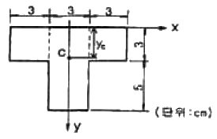
- 5.2
- 4.6
- 3.5
- 2.9
(정답률: 알수없음)
23. 그림과 같은 단순보에 2.5 kN의 집중하중이 작용할 때 발생하는 최대 전단력은 몇 kN 인가?
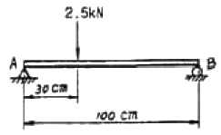
- 0.5
- 0.75
- 1.75
- 2.5
(정답률: 알수없음)
24. 단면의 주축에 대한 설명 중 올바른 것은?
- 주축에서는 단면 2차모멘트가 0 이다.
- 주축에서는 단면 상승모멘트가 0 이다.
- 주축에서는 단면 상승모멘트가 최대이다.
- 주축에서는 단면 2차모멘트가 최대이다.
(정답률: 알수없음)
25. 보의 길이가 1m 이고, 한 변이 2cm 인 정사각형 단면인 단순보의 중앙점에 집중하중 10kN이 작용할 때 발생하는 최대 전단응력은 약 몇 MPa 인가?
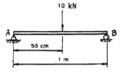
- 18.8
- 25.0
- 37.5
- 52.5
(정답률: 알수없음)
26. 그림과 같은 균일 단면 봉에 인장하중 P가 작용할 때 축에 수직한 단면과 45° 의 각도를 이루는 경사 단면에 생기는 수직응력 σn과 전단응력 τ 사이의 관계는?
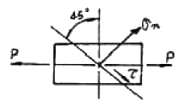
- σn = 2τ
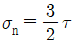
- σn = τ
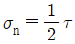
(정답률: 알수없음)
27. 그림과 같은 봉재에서 20kN의 힘을 고정단으로부터 몇 m 되는 곳에 작용시키면 봉의 전신축량이 0 이 되겠는가?
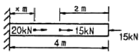
- 0.5
- 1.0
- 1.5
- 2.0
(정답률: 알수없음)
28. 그림과 같은 직사각형 단면의 외팔보가 자유단에 집중하중이 작용하고 있을 때, 단면에 발생하는 최대 굽힘 응력은 어느 식으로 표시되는가?
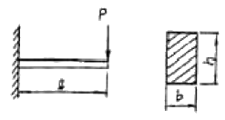
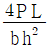
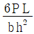
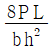
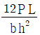
(정답률: 알수없음)
29. 단면적이 10cm2인 봉을 35℃에서 수직으로 매달고 –10℃로 냉각하였을 때 원래의 길이를 유지하려면 봉의 하단에 몇 kN 추를 달면 되는가? (단, 봉의 자중은 무시하고 선팽창계수 α = 12×10-5/℃, 탄성계수 E = 200 GPa 이다.)
- 72
- 82
- 98
- 108
(정답률: 알수없음)
30. 그림과 같은 외팔보에 집중 하중 W1과 W2가 작용할 때, 전단력 선도(SFD)와 굽힘모멘트 선도(BMD)로 옳은 것은?
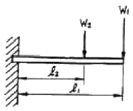
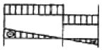
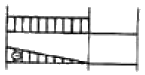
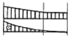
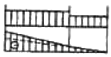
(정답률: 알수없음)
31. 다음과 같이 길이가 L이고, 균일 분포하중 ω를 받는 단순보의 최대 굽힘모멘트는?
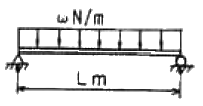
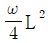
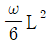
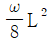
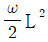
(정답률: 알수없음)
32. 길이가 L인 단순 지지보가 균일분포 하중을 받을 때 최대 처짐량을 δ라고 한다면, 단면(A), 탄성계수(E), 균일분포 하중의 크기를 돌이하게 하고 최대 처짐량을 3δ로 하려면 보의 길이를 얼마 정도로 해야 하는가? (단, 분포하중은 보의 전체에 작용한다.)
- 2.0 L
- 1.5 L
- 1.3 L
- 1.1 L
(정답률: 알수없음)
33. 그림과 같은 외팔봉서 고정단 B의 수직방향 반력은 몇 kN 인가?
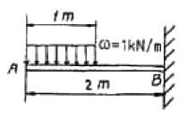
- 0.5
- 1
- 1.5
- 2
(정답률: 알수없음)
34. 탄성계수가 210 GPa인 연강의 탄성한도를 800 MPa 이라고 하면 단위 체적당 최대 탄성에너지는 약 몇 N·m/m3 인가?
- 1.22 × 106
- 1.32 × 106
- 1.52 × 106
- 1.82 × 106
(정답률: 알수없음)
35. 지름 5cm인 강봉에 50kN의 압축하중이 작용할 경우 봉의 지름변화량은 몇 mm 인가? (단, 강봉의 탄성계수 E = 2⑤ GPa, 포아송 비 ν = 0.3)
- 0.00395
- 0.000395
- 0.00186
- 0.000186
(정답률: 알수없음)
36. 단면이 원형인 축이 6 Kn·m의 비틀림 모멘트를 받고 있을 때, 축의 바깥 면에서 발생하는 최대 전단응력이 30MPa이라면 축의 지름은 몇 cm 인가?
- 10
- 12
- 14
- 16
(정답률: 알수없음)
37. σx = 49MPa, σy =98MPa, τxy =73.5MPa 일 때 평면응력 상태의 최대 및 최소 주응력 σ1, σ2는 각각 몇MPa 인가?
- σ1 = 102, σ2 = -53
- σ1 = 102, σ2 = 53
- σ1 = 151, σ2 = 4
- σ1 = 151, σ2 = -4
(정답률: 알수없음)
38. 그림과 같은 두께 10mm의 연강판에 지름 30mm의 구멍을 펀치로 뚫고자 한다. 판의 전단파괴 응력을 30MPa 이라고 할 때 펀치 하중은 kN이면 되겠는가?
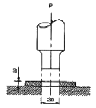
- 22.3
- 25.3
- 28.3
- 31.3
(정답률: 알수없음)
39. 지름 10cm인 중심축이 1000 rpm으로 회전하고 있다. 이 차축이 전달시킬 수 있는 최대 동력은 약 몇 kW 인가? (단, 허용 전단응력은 30 MPa 로 한다.)
- 121
- 308
- 617
- 1215
(정답률: 알수없음)
40. 압축 하중을 받는 기둥의 강도 계산에서 세장비는 매우 중요한 값이다. 세장비가 80이고 지름이 60mm인 기둥의 길이는 몇 m 인가?
- 0.8
- 1
- 1.2
- 1.4
(정답률: 알수없음)
3과목: 기계설계 및 기계재료
41. 다음 중 기계구조용 탄소강은?
- SM20C
- SPS3
- STC3
- GC200
(정답률: 알수없음)
42. 탄소강에서 적열 매장을 방지하고 담금질 효과를 증가하기 위하여 첨가하는 원소는?
- 규소(Si)
- 망간(Mn)
- 니켈(Ni)
- 구리(Cu)
(정답률: 알수없음)
43. 일반적으로 탄소강에서 탄소량이 증가할수록 증가하는 물리적 성질은?
- 비중
- 열팽창계수
- 전기저항
- 열전도도
(정답률: 알수없음)
44. 다음 중 다이스강의 특징이 아닌 것은?
- 고온경도가 낮다.
- 내마모성이 좋다.
- 풀림 처리 상태에서 가공성이 양호하다.
- 담금질에 의한 변형이 적다.
(정답률: 알수없음)
45. 가공용 황동의 대표적인 것으로 연신율이 크고, 인장강도가 상당히 높아 상온 가공성이 용이하기 때문에 전구의 소켓이나 탄피 등으로 사용되는 황동은?
- 6:4 황동
- 7:3 황동
- 납 황동
- 철 황동
(정답률: 알수없음)
46. 탄소강이 공석 변태할 때 펄라이트 조직량이 최대가 되는 탄소함량(%)은?
- 0.2
- 0.5
- 0.8
- 1.2
(정답률: 알수없음)
47. 황동에서 잔류응력에 의해서 발생하는 현상은?
- 탈아연 부식
- 고온 탈아연
- 저온 풀림경화
- 자연균열
(정답률: 알수없음)
48. 알루미늄 합금인 두랄루민의 표준 성분에 포함된 금속이 아닌 것은?
- Mg
- Cu
- Ti
- Mn
(정답률: 알수없음)
49. 다음 중 선팽창계수가 큰 순서로 올바르게 나열된 것은?
- 알루미늄 ＞ 구리 ＞ 철 ＞ 크롬
- 철 ＞ 크롬 ＞ 구리 ＞ 알루미늄
- 크롬 ＞ 알루미늄 ＞ 철 ＞ 구리
- 구리 ＞ 철 ＞ 알루미늄 ＞ 크롬
(정답률: 알수없음)
50. 니켈에 대한 설명으로 틀린 것은?
- 면심입방격자이다.
- 전기저항이 크다.
- 상온 및 고온가공이 용이하여 상온에서 강자성체이다.
- 백색의 금속으로 전·연성이 부족하다.
(정답률: 알수없음)
51. 배관 신축이음에서 온도차가 t℃, 관의 길이를 l, 열팽창 계수를 α라 하면 신축량 λ는?
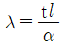
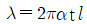
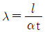
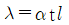
(정답률: 알수없음)
52. 다음 중 축의 강도를 약화시킴 없이 동력을 전달할 수 있는 키는?
- 묻힘 키(sunk key)
- 안장 키(saddle key)
- 반달 키(woodruff key)
- 접선 키(tangential key)
(정답률: 알수없음)
53. 베어링의 호칭 번호가 6800 이면 베어링 내경은 몇 mm 인가?
- 5
- 10
- 15
- 20
(정답률: 알수없음)
54. 그림과 같은 단면의 축이 전달할 수 있는 최대 비틀림 모멘트의 비 TA/TB의 값은? (단, 두 재료의 재질은 같다.)
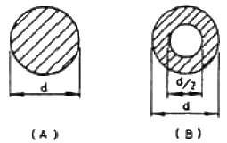
- 9/16
- 16/9
- 15/16
- 16/15
(정답률: 알수없음)
55. 극한강도 σ = 550 MPa인 연강의 지름이 d = 50mm일 때, 이 재료가 안전하게 받을 수 있는 힘(kN)은 약 얼마인가? (단, 안전율(S) = 8 이다.)
- 87
- 134
- 539
- 1079
(정답률: 알수없음)
56. 두 줄 나사를 두 바퀴 들렸더니 축 방향으로 12mm 이동했다. 이 나사의 피치(p)와 리드(ℓ)는 각각 얼마인가?
- p = 3mm, ℓ = 6mm
- p = 6mm, ℓ = 3mm
- p = 3mm, ℓ = 3mm
- p = 6mm, ℓ = 6mm
(정답률: 알수없음)
57. 원형 봉에 비틀림 모멘트를 가하여 비틀림 변형에 의해 발생하는 탄성을 이용한 스프링은?
- 토션 바
- 벌류트 스프링
- 와이어 스프링
- 비틀림 코일스프링
(정답률: 알수없음)
58. 체인의 링크가 스프로킷에 비스듬이 미끄러져 들어가 맞물려 있어서 롤러 체인보다 소음이 적어 주로 조용한 운전 및 고속용으로 쓰이는 체인은?
- 사일런트 체인(silent chain)
- 핀들 체인(pintie chain)
- 오프셋 체인(offset chain)
- 부시 체인(bush chain)
(정답률: 알수없음)
59. 다음 중 동력의 단위로 사용되는 것은?
- W
- N
- Pa
- J
(정답률: 알수없음)
60. 40kW, 200rpm 으로 동력을 전달하는 축의 지름의 크기는 약 몇 mm 이상이어야 하나? (단, 축의 허용전단응력 τa=60 MPa 이고, 비틀림 응력만을 받는다고 가정한다.)
- 100
- 55
- 35
- 25
(정답률: 알수없음)
4과목: 유압기기 및 건설기계일반
61. 축압기(어큐뮬레이터)의 주요 용도가 아닌 것은?
- 유압 에너지 축적
- 유독, 유해성 유체 수송
- 펌프 맥동율 혼수
- 유압유의 마찰열 회수
(정답률: 알수없음)
62. 유압펌프의 용적효율을 ηv, 기계효율을 ηt라 할 때 전효율 η를 구하는 식은? (단, 압력효율은 무시한다.)
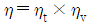
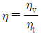
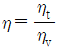
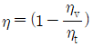
(정답률: 알수없음)
63. 유압유가 가지고 있는 에너지를 직선왕복운동으로 바꾸어 기계적인 일을 하는 액추에이터는?
- 유압 실린더
- 유압 요동 모터
- 유압 모터
- 유압 펌프
(정답률: 알수없음)
64. 아래 그림은 압력제어 회로이다. 여기서 ①은 무엇을 나타내는 기호인가?
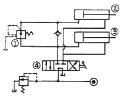
- 스톱 밸브
- 감압 밸브
- 릴리프 밸브
- 실린더
(정답률: 알수없음)
65. 안지름 ø25mm의 관을 통하여 유량을 80ℓ/min로 공급할 때 수송관 내 유속은 약 몇 m/s 인가?
- 2.21
- 2.32
- 2.52
- 2.72
(정답률: 알수없음)
66. 유압 기호를 구성하는 기호 요소 중에서 1점 쇄선의 용도는?
- 주관로
- 제어 기기
- 전기신호선
- 포위선
(정답률: 알수없음)
67. 다축 보링머신에서 부하가 급격히 감소하여 스핀들이 급진하는 것을 방지하기 위하여 실린더 출구측에 유량조절 밸브를 설치한 회로로 펌프의 송출압력은 유량제어밸브에 의한 배압에 부하저항에 따라 정해지는 회로는?
- 미터 인 회로(meter in circuit)
- 미터 아웃 회로(meter out circuit)
- 블리드 오프 회로(bleed off circuit)
- 감속 회로(deceleration circuit)
(정답률: 알수없음)
68. 유압장치에 사용되는 압력제어밸브 중 감압밸브의 용도는?
- 실린더의 전진속도를 빠르게 하거나 느리게 한다.
- 회로 내의 압력을 주회로보다 저압으로 해서 사용하는 경우이다.
- 압력 변화를 전기신호로 바꾸어 주는 전공변환기이다.
- 유압실린더를 정해진 순서에 따라 작동시킨다.
(정답률: 알수없음)
69. 프레스작업에서 일정시간 그대로 놓아두면 자중에 의하여 램이 하강한다. 자중에 의하여 하강하지 않도록 하기 위한 방법으로 가장 적합한 것은?
- 축압기회로를 구성한다.
- 로크회로를 구성한다.
- 무부하회로를 구성한다.
- 압력설정회로를 구성한다.
(정답률: 알수없음)
70. KS에서 길이가 단편 치수에 비해서 비교적 짧은 죙구로 정의된 유공압 요소는?
- 오리피스
- 초크
- 캐비테이션
- 서지압
(정답률: 알수없음)
71. 다음 중 편탄지 공사를 위해 빠른 속도로 토량의 굴착, 운반 등의 작업을 수행할 수 있으며 500 ~ 1500m 범위에서 공사하는데 가장 적합한 건설기계는?
- 모터 스크레이퍼
- 백호
- 어스 드릴
- 드래그 라인
(정답률: 알수없음)
72. 디젤 파일 해머의 규격표시는 무엇으로 하는가?
- 기관 출력
- 기관 중량
- 램의 중량
- 램의 높이
(정답률: 알수없음)
73. 건설기계 유압펌프의 종류에 속하지 않는 것은?
- 기어 펌프
- 베인 펌프
- 플런저 펌프
- 펠톤 펌프
(정답률: 알수없음)
74. 아스팔트 페이버(asphalt paver)라고도 하며 아스팔트 혼합물을 포설하는데 사용되는 포장기계는?
- 아스팔트 피니셔(asphalt finisher)
- 아스팔트 디스트리뷰터(asphalt distributor)
- 아스팔트 탱크(asphalt tank)
- 아스팔트 스프레이어(asphalt sprayer)
(정답률: 알수없음)
75. 건설기계 중 크램셀(Clamshell)의 용도로 가장 적합한 것은?
- 도로, 제방, 비행장 등의 노면을 다지는데 사용한다.
- 아스팔트 살포작업에 사용한다.
- 기둥의 항타, 건물의 기초공사에 사용한다.
- 수작굴토작업, 토사적재작업 등에 사용한다.
(정답률: 알수없음)
76. 다단 왕복공기압축기에서 공기가 압축되면 열이 발생하게 되어 그 열이 공기를 팽창시켜 압축하는데 필요한 동력이 커지게 된다. 이 열을 냉각시켜 압축하는데 필요한 동력을 줄여주는 역할을 하는 장치는?
- 언로더(unloader)
- 공기 블로워(air blower)
- 인터쿨러(inter cooler)
- 에어 드라이어(air aryer)
(정답률: 알수없음)
77. 버켓 용량이 0.6m3 굴삭기가 1일 6시간 작업할 때 1일 작업량(m3)은 얼마인가? (단, 사이클시간 20초, 흙의 토량변화율 1.0, 버켓계수 1.0, 작업효율 75%)
- 286 m3
- 386 m3
- 486 m3
- 586 m3
(정답률: 알수없음)
78. 로우더(loader)로서 수행하기 곤란한 작업은?
- 버킷에 의한 굴삭 및 상차 작업
- 암석 및 나무 뿌리 제거
- 목재, 파이프 등의 이동
- 트렌치 작업
(정답률: 알수없음)
79. 다음 중 굴착력(굴착하는 힘)이 가장 농픈 준설장비는?
- 그래브(grab) 준설선
- 디퍼(dipper) 준설선
- 버킷(bucket) 준설선
- 펌프(pump) 준설선
(정답률: 알수없음)
80. 건설기술관리법에 다음 중 감리원이 될 수 있는 자는?
- 금치산자 또는 한정치산자
- 파산선고를 받고 복권되지 않은 자
- 건설기술관리법, 건축법, 건축사법, 주택법 또는 국가기술자격법 제26조 제2항의 죄를 범하여 금고이상의 실형의 선고를 받고 그 집행이 종료되지 않은 자
- 형법 제129조 내지 제132조의 죄를 범하여 금고이상의 실형을 받고 그 집행이 종료되거나 면제된 날로부터 5년이 경과된 자
(정답률: 알수없음)